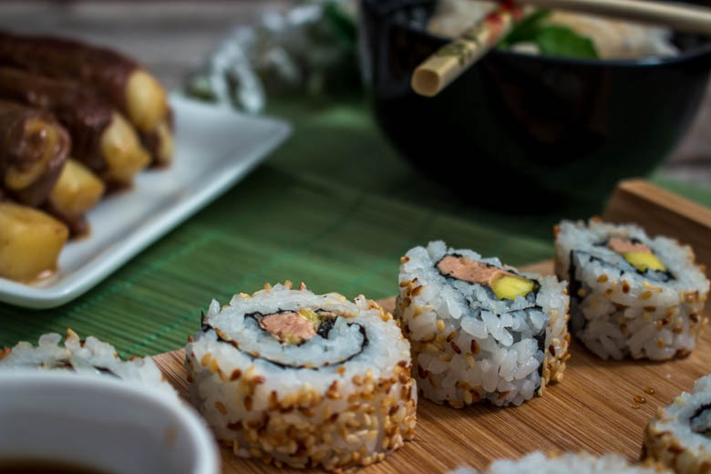
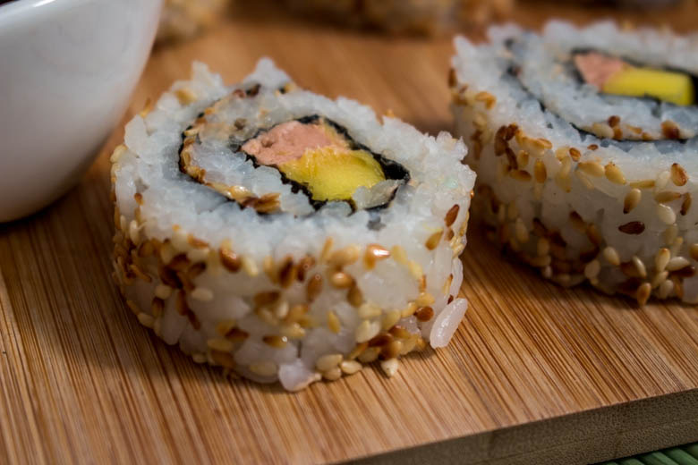
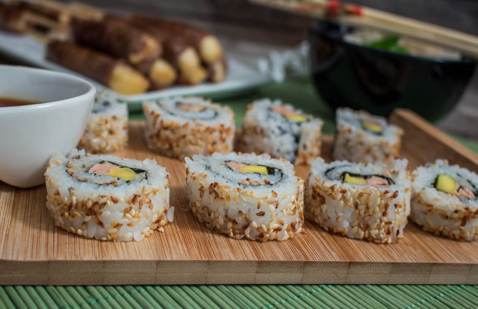

California rolls foie gras mangue et un peu de sésame doré

Aujourd’hui nous revoilà avec une nouvelle recette de california rolls un peu différents de ceux que nous avons l’habitude manger! Plutôt que de cuisiner le « classique » maki ou california rolls au saumon j’ai décidé de vous proposer une version « sucré-salé » puisqu’il s’agit de california rolls foie gras, mangue parsemés de sésame doré. Comme je l’ai déjà expliqué dans ma précédente recette de california rolls (ici avocat-cream cheese), les california rolls sont en réalité des makis à l’envers car ils ont la feuille d’algue Nori à l’intérieur entourée de riz à l’extérieur et garnis généralement de sésame.
Mes petits california rolls foie gras mangue sont délicieux accompagnés d’une sauce soja légèrement sucrée plutôt qu’une sauce soja salée mais ça c’est une question de goût!
Pendant longtemps j’ai préféré faire des makis plutôt que des california rolls par facilité car faire des california rolls me paraissais beaucoup plus difficile alors qu’en réalité c’est plus ou moins la même chose et depuis je ne fait quasiment plus que ça.
Ce soir là comme la photo en témoigne, nous nous sommes préparés un vrai petit repas aux accents « Japonais » en accompagnant nos california rolls d’excellents yakitoris au fromage (recette ici) qui est une de mes recettes favorites en ce moment! Sincèrement si je pouvais m’en faire tous les jours je pense que je le ferais 😀
Allez assez discuté maintenant, place à la recette et j’espère qu’elle vous plaira 🙂
Ingrédients
- Graines de sésame - une grosse poignée
- Foie gras - 150g
- Mangue - 1
- Riz à sushi - 300g
- Eau - 300ml
- Vinaigre de riz assaisonné - 4 càs
Instructions
- Laver le riz à l'eau claire.
- Dans un saladier, verser le riz dans un grand volume d'eau, l'eau va devenir blanche. Jeter l'eau puis renouveler l'opération jusqu’à ce que l'eau soit claire (environ 3/4 fois)
- Faire bouillir les 300ml d'eau dans une casserole.
- Quand l'eau bout, verser le riz et baisser le feu au minimum
- Laisser cuire 15 minutes
- Quand le riz est cuit verser 4 càs de vinaigre de riz.
- Bien mélanger le riz et laisser refroidir
- Éplucher et couper la mangue en tranches
- Couper le foie gras en lanières d'au moins 1 cm d'épaisseur
- Faire dorer dans une poêle bien chaude les graines de sésame mais attention à ce que ça ne brûle pas car ça va assez vite et réserver.
- Recouvrir de film étirable le bambou (facultatif mais bien plus hygiénique)
- Déposer la feuille de Nori (je découpe 1/4 de la feuille de Nori car celles que j'achète sont à mon goût trop grandes et les california bien trop gros)
- Tremper les mains dans l'eau et prendre une poignée de riz (mieux vaut en prendre pas beaucoup que trop car on peut réajuster après)
- Partir du bord et étaler le riz avec les mains sur la feuille de Nori.
- Si vous n'en avez pas pris assez, boucher les trous
- Saupoudrer le riz des graines de sésame dorées
- Retremper les mains dans l'eau pour vos débarrasser des grains de riz collés et retourner la feuille d'algue
- Placer votre garniture sur le bas de la feuille d'algue et sur toute la longueur
- Commençons le "pliage : A l'aide du "bambou" rouler la feuille de Nori en serrant fort
- Placer au frais le temps de faire les suivants





Les tips de la communauté
Excellent accueil pour cette réinterprétation créative des california rolls. Lecteurs soulignent l'originalité de l'association foie gras-mangue. Recette considérée comme sophistiquée et appropriée pour les occasions spéciales.
Astuces
- Le foie gras mi-cuit peut être utilisé en le gardant au frais après découpe
- Placer le foie gras au frais après découpe si non utilisé immédiatement
- Technique de roulage est un coup de main à prendre
- L'association foie gras-mangue est délicieuse et polyvalente
Variantes suggérées
- Faire les rouleaux la veille en les enveloppant dans du film alimentaire, découper le jour
- Possibilité de servir avec sauce soja ou nature
Ajustements signalés
- c’est que le foie gras ait une bonne tenue et qu’il reste en « bloc ».